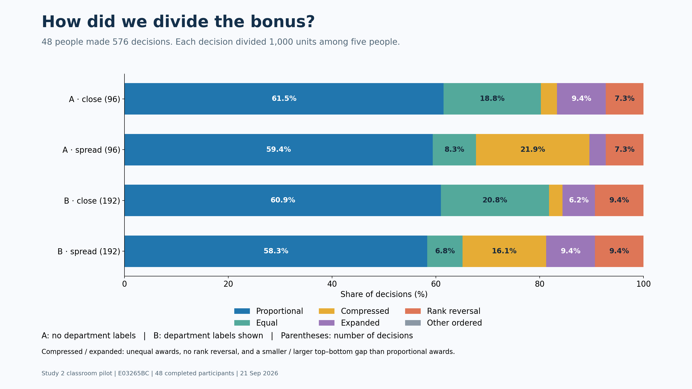
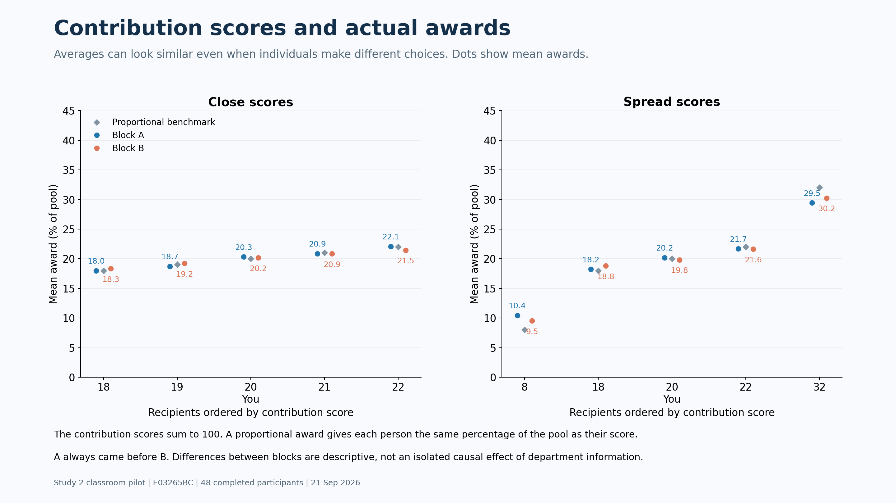
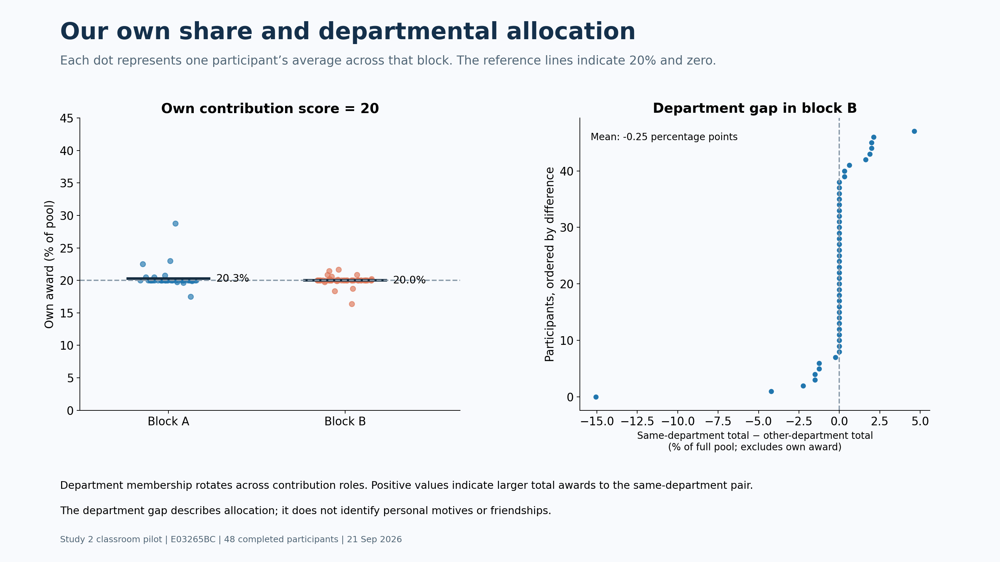
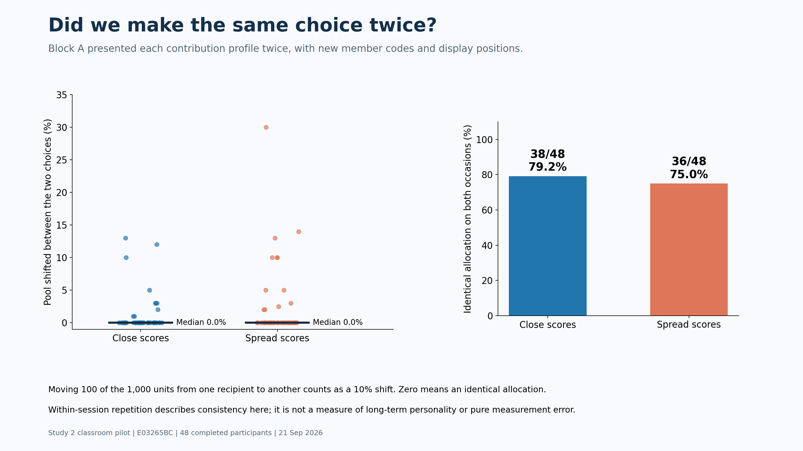
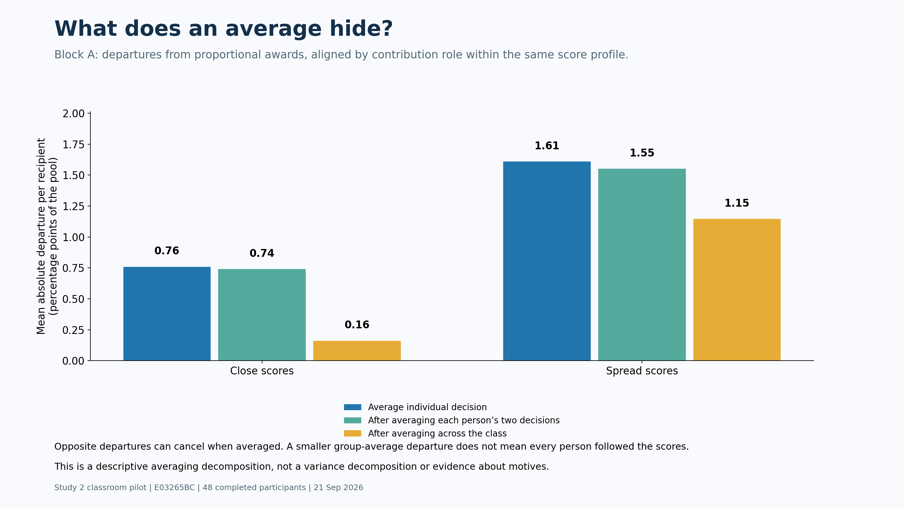

<!doctype html><html lang="en"><meta charset="utf-8"><meta name="viewport" content="width=device-width, initial-scale=1"><title>Study 2 — classroom allocation patterns</title><style>body{margin:0;background:#142333;font-family:Arial}main{max-width:1600px;margin:auto}img{display:block;width:100%;height:auto;margin:0 auto 24px}nav{position:sticky;top:0;background:#142333;padding:12px;text-align:center;color:white}a{color:white;padding:8px 16px} @media print{nav{display:none}img{break-after:page;margin:0}}</style><nav><a href="/">Back to activity</a> Study 2 · E03265BC · Allocation behavior <a href="#s1">1</a><a href="#s2">2</a><a href="#s3">3</a><a href="#s4">4</a><a href="#s5">5</a></nav><main></main></html>